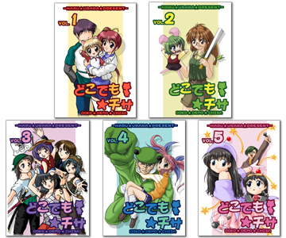

■英亜（システムサポート担当） いろいろいろの雑用担当の英亜です。
サポートっぽいことをしてみたり，足りないリソースをでっちあげてみたり，技のスプリプト書いてみたり，不具合報告をまとめたり…と，こう書きだしてみると，我ながらなかなかの雑用っぷりですね（満足顔
最近めっきりIGM(Internet Game Maker,
ネット対戦の社交場)に顔を出せてなかったので，これが終ったら，また対戦しに行きたいです！
あと，「サユリの誤」アップデート版で登場したリッキーも活躍する，「どこでも★チサ」をウェブ上で連載中ですので，そちらもよろしくです～！

春うらら製作ｗｅｂコミック【どこでも☆チサ】
|